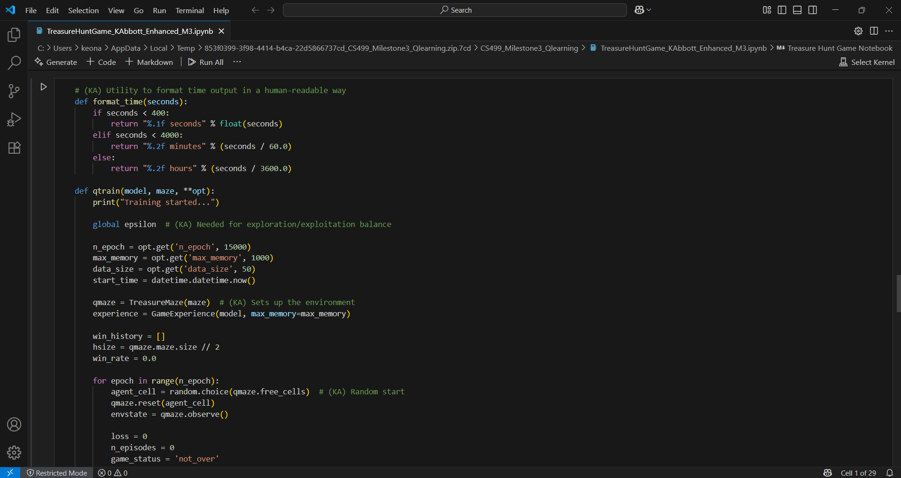

Artifact Overview
This artifact is a Python-based Q-learning project that simulates a treasure hunt inside a maze. It was originally developed during my AI coursework and significantly enhanced for this capstone. I selected this project because it captures the logic-heavy, decision-making aspect of algorithms and ties directly into reinforcement learning concepts that fascinate me.
In the enhancement process, I focused on cleaning up the core Q-learning loop, improving readability, and adding explanatory comments that break down the logic clearly — not just for others, but for me to revisit later. You’ll also notice the added training output and episode tracking logic, which helped me tune performance more effectively and validate that the agent was actually learning, not just stumbling around.
In Action
You can actually watch this agent learn and evolve in real time in my Code Review video. I talk through the logic and show what happens as the agent explores, fails, and eventually succeeds at consistently finding the treasure.
Enhancements and Reflection
This wasn't just about writing functional code. I really took time to revisit the reinforcement loop, improve the training feedback, and structure the experience buffer in a way that made it easier to test and debug. I also paid attention to how the agent was initialized, how actions were selected, and how performance data was logged.
From a data structures perspective, I used arrays, dictionaries, and matrix operations to track state, reward, and transitions. Reinforcement learning is abstract at first, but once I saw it work in a project like this, it clicked — and I knew this would be the right choice for my Algorithms & Data Structures artifact.
Project Files
The full project, including the enhanced Jupyter Notebook and supporting Python files, is available in the unzipped folder inside this directory. It’s fully commented and ready to explore.